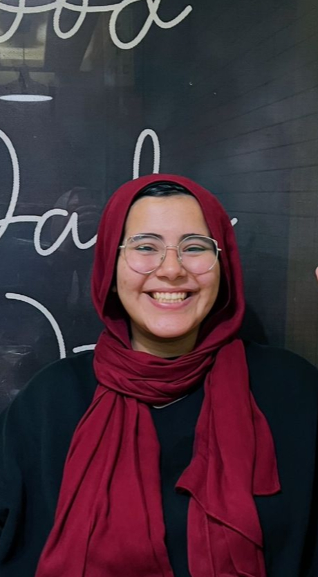

Undergraduate Engineering Student — USAID Scholar
Email: sarashaban613@gmail.com
Phone: +20 1091047600
Location: Mansoura, Egypt
Resume Linkedin Github BehanceHighly motivated Communication and Computer Engineering student with hands-on experience in embedded systems (Ar duino, ROS), full-stack development (React, Flutter), and robotics. Selected as a USAID Scholar for a prestigious exchange semester at the University of Nebraska–Lincoln, USA. Proven leadership through 8+ volunteer roles and engineering intern ships at Limatrix Inc., Siemens& Eitesal NGO, and national robotics centers. Strong communication, cross-cultural, and technical problem-solving skills, with a passion for innovative, real-world applications.
BSc in Communication and Computer Engineering (CGPA 3.96/4.0, Ranked 2nd among my department peers)
Recipient of the USAID Scholars Program– a fully funded, merit-based scholarship awarded by USAID Egypt
International Exchange Student, Computer Engineering(CGPA 3.60/4.0, College of Engineering Dean’s List)
Junior Embedded Systems Intern:
Worked on low-level systems and embedded hardware integration.
Studied Automotive & Electronic IP in The Egyptian Embedded and Electronics Center of Excellence
Python Programming Intern:
Developed 4+ Python automation tools and mini-games, including a quiz app and calculator, reducing manual input by 80% in demo tests.
IoT & Computer Vision:
Developed CV models with IoT applications.
Studied applied aerospace electronics and robotics.
Created a full-stack React app with UI/UX design and user interaction.
Developed a vending machine system using the MSP430 microcontroller, implementing core functionality including item selection, payment handling, and product dispensing.
DevelopedanautomationsystemusingArduino to manage lights, sensors, and control appliances managing 10+ appliances with motion sensors, achieving 95% energy efficiency in testing.
Designed, coded, and built autonomous robots for competition.
Built electronic control systems integrated with sensors and actuators.
Developed games and utilities (e.g., quiz app, to-do list, password generator) to practice algorithms and UI logic.
Calendar App, Coffee Shop App, redesigns of Amazon, Instagram, Netflix.
with Dr. Hamid Vakilzadian, College of Engineering, School of Electrical & Computer Engineering, University of Nebraska–Lincoln — Fall 2024
Researched and Developed a Python-based interface to control a robotic arm using keyboard input, applying ROS and robotics protocols and improved outcomes through real-time system testing.
Led strategic communications and event promotions for community engagement.
Oversaw outreach, branding, and speaker coordination for Microsoft-led tech events.
Facilitated communication and event planning among USAID cohorts and university partners.
Led IT infrastructure and digital systems used in aerospace-focused training initiatives.
Supported technical sessions and managed public outreach materials.
Planned and executed logistics for 2 university-wide engineering forums with 1000+ attendees.
Trained 50+ students through 20+ robotics and coding workshops.
Represented Egyptian cohort and facilitated cultural exchange and academic collaboration at UNL.